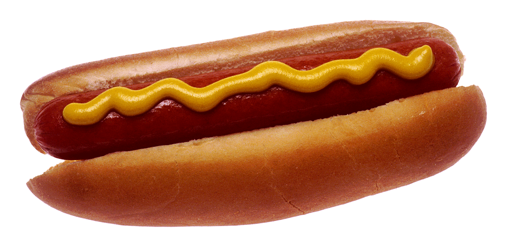

Hot Dog

This is a recipe for how to make hot dogs
Hot dogs are an American classic. They're eaten all year round, but specifically on holidays like Independence Day, and at sporting events like baseball games.
Ingredients
- Pack of hot dogs
- Pack of hot dog buns (potato buns are my favorite)
- Mustard
- Ketchup
Steps
- Fill a saucepan with 2 cups of water
- Place the desired amount of hot dogs into the saucepan. I usually cook and eat 3.
- Place the saucepan on the stove on high heat.
- Bring the water in the saucepan to a boil and allow the hot dogs to cook for 5 minutes.
- While the water is boiling, remove your hot dog buns from the bag. Open them up and place them on a plate.
- With a fork, skewer the hot dogs and place them on the buns.
- Add the desired mustard and ketchup to each hot dog.
- Enjoy!